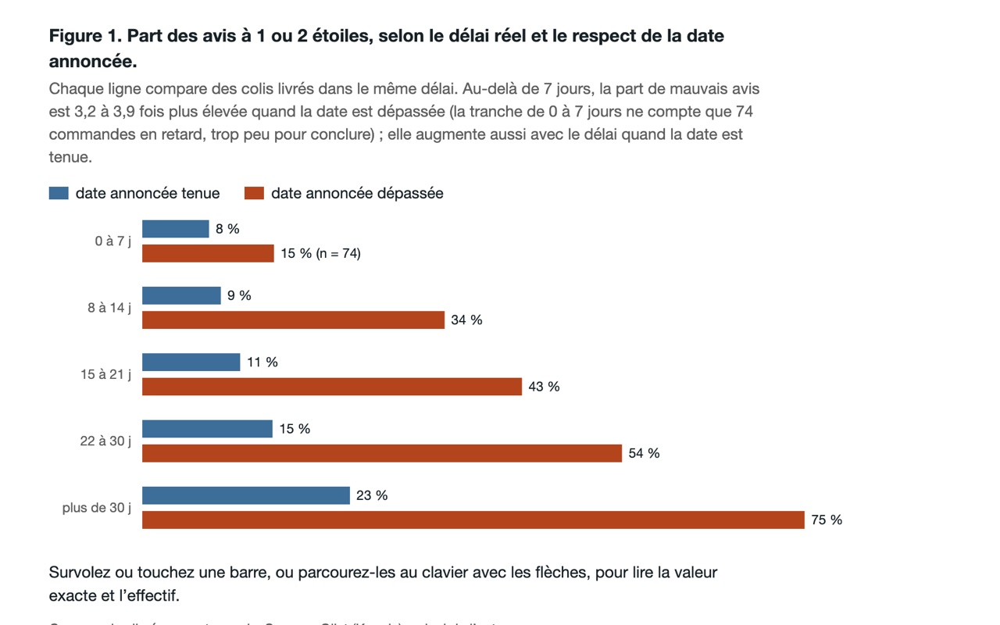
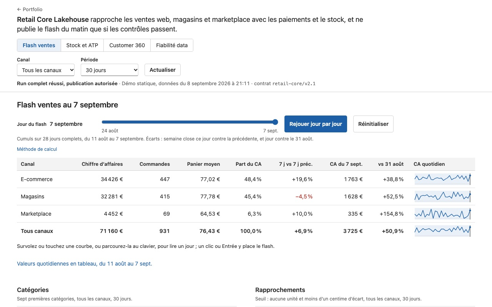
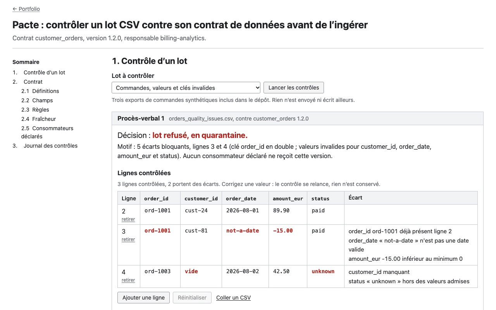
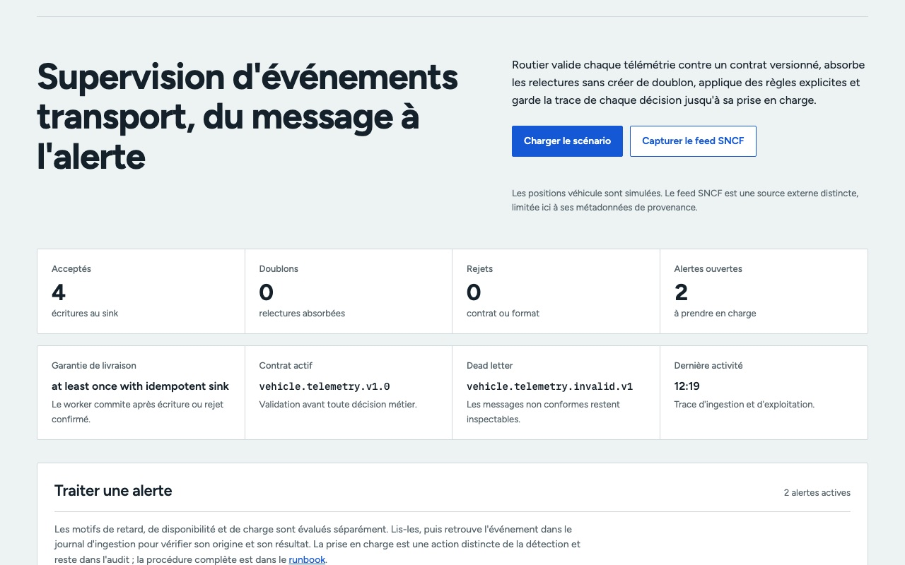
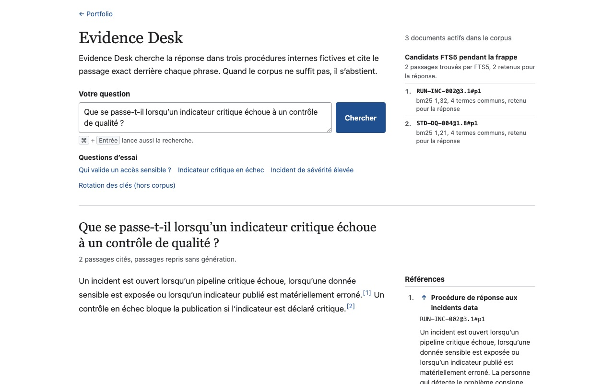
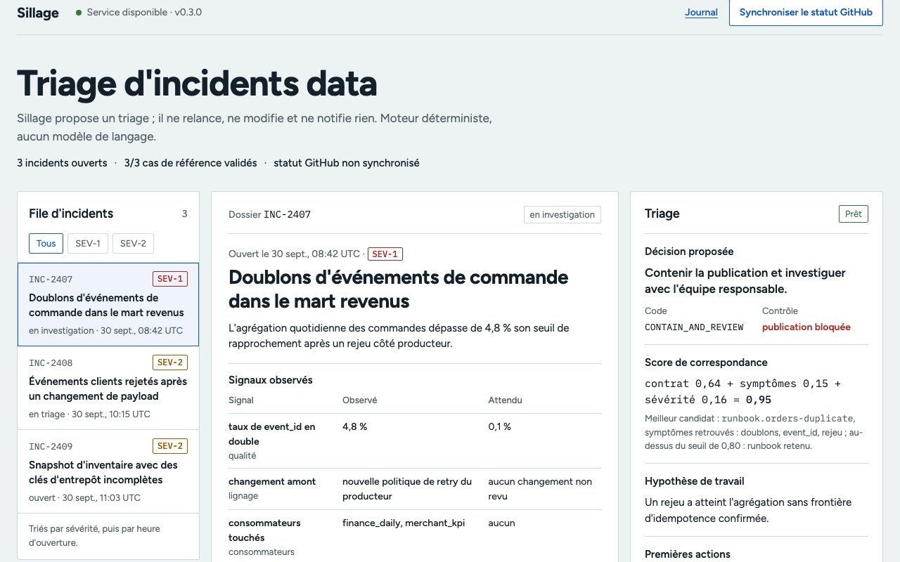

Core role · 3 years in production
Data engineering
Ingestion, orchestration, data contracts and quality checks. At Generali, I industrialised marketing pipelines and worked on the migration to Snowflake.
For three years at Generali, I built marketing pipelines and worked on the migration to Snowflake. I also produced the campaign performance metrics that digital marketing, management and sales teams followed every week and every month. My latest project is an analysis memo on 96,470 real Olist orders, from ingestion to recommendation.
Data Engineer by trade. At Generali I also built the metrics and reports business teams used; AI is something I practise on personal projects.
Core role · 3 years in production
Ingestion, orchestration, data contracts and quality checks. At Generali, I industrialised marketing pipelines and worked on the migration to Snowflake.
Data Analyst · Analytics Engineer
Define a KPI and its grain, model it in SQL and dbt, build the report, then explain the variances. Comptoir shows the whole process on public data, down to the tested recommendations and the ones I rule out.
EvidenceGeneraliComptoirRetail Core
AI Engineer · complementary
Evidence Desk answers with the cited passage and abstains when its sources are too weak; Sillage proposes an incident triage plan that an operator accepts or rejects.
EvidenceEvidence DeskSillage
Personal projects, from the most analytical to the most AI-oriented. Demos hosted on Render can take 30 to 50 seconds to wake up.
Analytics / analysis memo
Analysis memo on 96,470 real Olist orders (written in French). 29% of 1- and 2-star reviews are posted before delivery, because the survey is sent on the estimated date. Delivery-date rules are calibrated on 2017 and tested on 2018: recomputing the date per route does no better than Olist, and the memo says so.

DuckDB / dbt / SQL
Backtest
Analytics · Data engineering / retail
Retail cockpit on synthetic data: performance by channel, available-to-promise stock, Customer 360 and RFM segmentation. Upstream, Airflow and dbt (19 models, 78 tests) feed the KPIs, and a sales / payments reconciliation blocks publication if a figure does not add up.

SQL / dbt / DuckDB
Airflow
Local AWS, Terraform
KPI / RFM
Data engineering / data contracts
Before ingestion, Pacte checks schema, validity, business keys and volume. It produces an admission decision, shows the impact on downstream assets and keeps an idempotent receipt tied to the batch and contract fingerprints. The demo writes no real data.

Python / data contracts
Idempotent audit / lineage
SQLite
Data engineering / events
Kafka telemetry monitoring pipeline: contract validation, idempotent processing, rejected events, alerts and an ingestion log.

Python
Kafka / Redpanda
Applied AI / auditable RAG
Local-first document research workspace. Each answer exposes the passage used, its version, authority, freshness and a retrieval receipt. When the evidence is too weak, the tool abstains. The Golden v2 suite evaluates retrieval, grounding, traceability and safe refusal separately.

Python / SQLite FTS5
Golden v2 evaluation
HTTP API
Applied AI / data operations
Data incident triage assistant. It links an incident to a versioned contract and runbook, exposes the signals and provenance behind the decision, then lets the operator accept, challenge or reject the plan. No action on the data is automated.

FastAPI / SQLite
Docker / CI
Two short prototypes, each testable in under a minute.
The tools I use, grouped in the same order as my roles.
Airflow · PySpark · Snowflake · Kafka · Docker · Terraform · AWS · Hadoop · GitHub Actions
SQL · dbt · Power BI · Python · Pandas · DuckDB · Dataiku
FastAPI · SQLite FTS5 · RAG · Reference-set evaluation
2023 to June 2026
Generali
Engineering. Industrialised marketing pipelines and took part in the migration to Snowflake.
Analytics. Campaign performance metrics in Power BI, used in weekly and monthly performance reviews and to steer campaigns by digital marketing, management and sales teams. Targeted statistical analyses for business teams.
Education
Big Data & Machine Learning
Grande École programme, complemented by an academic semester in Kuala Lumpur.
Snowflake Data Engineering professional certificate (2026). In progress: IBM RAG and Agentic AI professional certificate.
Open to Data Engineer, Analytics Engineer and Data Analyst roles, as well as data-focused AI Engineer roles.
IkelITech@outlook.com